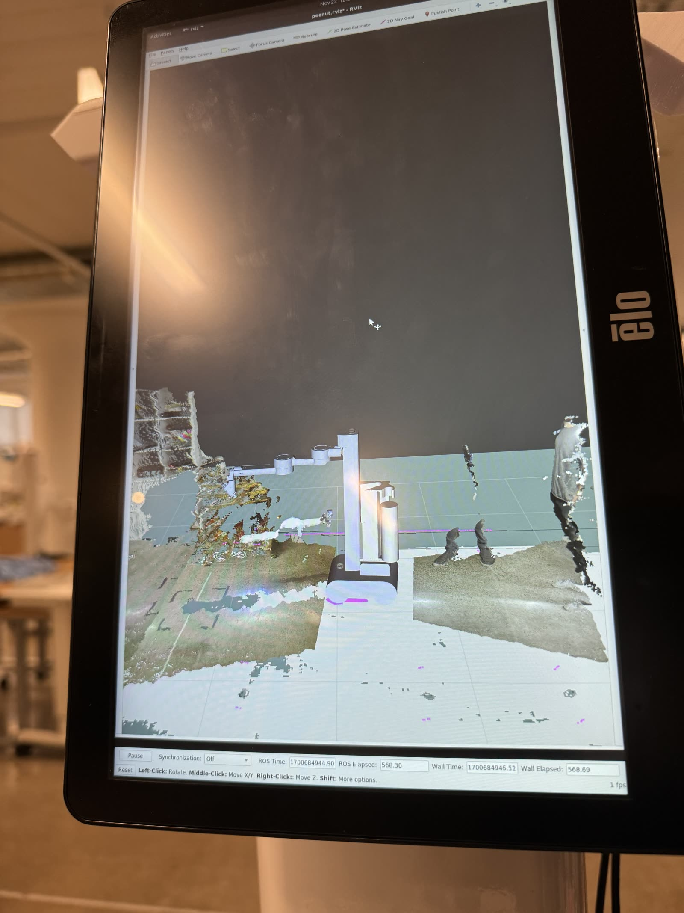
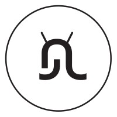

Selected work
Highlights




Mobile Manipulation · Jul 2022 to Apr 2024
Robotics Engineer at Peanut Robotics
Owned the arm software stack on a mobile manipulator for hotel bathroom cleaning:
TOPPRA trajectory generation, ICP+RANSAC vision, depth camera integration, and a live
trajectory recording system that cut operator training from hours to minutes.

System Integration · Google
Automated biometric testing for Pixel
Robotic system for hardware security testing on Pixel devices. Led ROS1→ROS2 migration
and refactored the node architecture for tight robot/camera synchronization.

Graduate Research · CMU CERLAB
Robotic post-processing of additive-manufacturing parts
NASA ULI-sponsored research on quality inspection of complex 3D-printed parts:
coverage planning for a robot arm and turntable so a line-scanner can fully scan an
arbitrary object.

Senior Capstone · Rose-Hulman · South Korea
Automated eating apparatus, and representing the USA in South Korea
A low-cost robotic feeding device for a quadriplegic client, built over three
prototypes at roughly $150 against $5,000 to $10,000 commercial arms. It took us to
the E²Festa in South Korea, representing Rose-Hulman and the USA, for a 10th-place
finish.